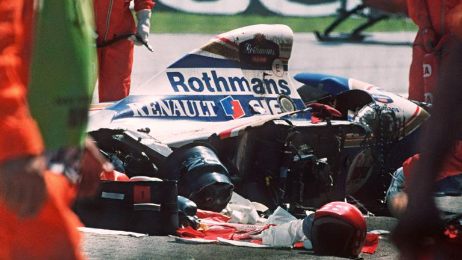
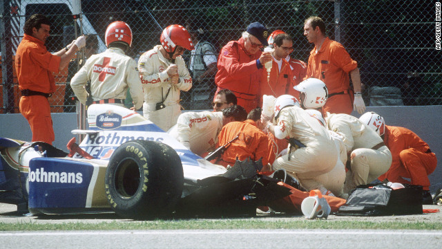
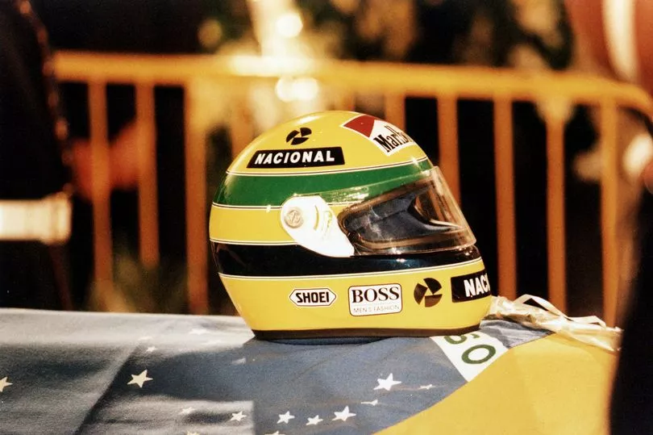

Legacy
Senna would lose his life at the 1994 Imola Grand Prix. This was a dark day for motorsports for a number of reasons.
On the the Friday practice, fellow Brazilian driver Rubens Barrichello, lost control of his Jordan and crashed into a wall launchin his car into the air. The Crash looked terrifing, however Barrichello walked away with only a few cuts and brusing. Friday practice was abbandoned.
The Saturday qualifying, would see new driver Roland Ratzenberger, failed to negotiate the Villeneuve curva in his Simtek; he subsequently hit the opposing concrete retaining barrier wall almost head-on and was critically injured. His cause of Death was basal skull fracture. Saturday qualifying was abbandoned and Simtek with drew from the Grand Prix.
Sunday was race day and Ayrton had pole position. Prof Sid Watkins, the F1 doctor who treated Rubens Barrichello injuries and pronunced Roland Ratzenberger dead, recalled in his memories "I tried to persuade Senna not to race the following day, asking "What else do you need to do? You have been world champion three times, you are obviously the quickest driver. Give it up and let's go fishing." Senna replied, "Sid, there are certain things over which we have no control. I cannot quit, I have to go on."
On the 1 lap 7, Senna exited Tamburello (a left hand corner), however the car disdn't change direction and continued straight and hit a concrete wall at 211 km/h (131 mph). Senna was killed instantly. Inside the cockpit of Senna's car was an Austrian flag, he planned to raise it in honour of Roland Ratzenberger.


Senna was given a state funeral in São Paulo, Brazil on 5 May 1994. Approximately 500,000 people lined the streets to watch the coffin pass. Senna's arch-rival Alain Prost was among the pallbearers. The majority of the Formula One community attended Senna's funeral; however the president of the sport's governing body, the FIA, Max Mosley attended the funeral of Ratzenberger instead which took place on 7 May 1994 in Salzburg, Austria. Drivers Gerhard Berger and Johnny Herbert were present as well. Mosley said in a press conference ten years later, "I went to (Ratzenberger's) funeral because everyone went to Senna's. I thought it was important that somebody went to his."

Since Senna death, many changes have been made to F1 regarding driver safety.These include improved crash barriers, redesigned tracks, higher crash safety standards (such as larger sills along the driver cockpit) and major cuts to engine power. The Tamburello corner and other parts of the Imola circuit were altered for 1995.
A few months before his death, Senna had discussed with his sister the foundation of a charitable organization, based on a desire to contribute to those less fortunate in a more organised and effective manner. After his death, Viviane Senna set up the Instituto Ayrton Senna in his honour, which has invested nearly US$80 million over the last 12 years in social programs and actions in partnership with schools, government, NGOs, and the private sector, aimed at offering children and teenagers from low-income backgrounds the skills and opportunities they need to develop their full potential as persons, citizens, and future professionals.[193] The foundation is officially advised by Bernie Ecclestone, Alain Prost, and Gerhard Berger.